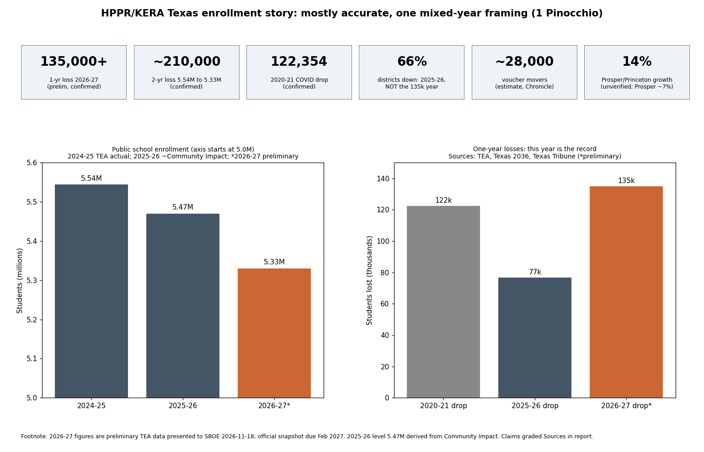

The core claims check out: Texas public schools lost more than 135,000 students (about 2.5%) in 2026-27, a record; the prior record was the 2020-21 COVID drop of 122,354; enrollment peaked at 5,544,255 in 2024-25 (TEA); the two-year loss is about 210,000.
What would change this: TEA's official February 2027 snapshot may move the 135,000 figure; a source for the 14% would remove one weakness. Sources disagree on the exact 2025-26 level (5.47M derived from Community Impact).
| Claim | Grade | Evidence |
|---|---|---|
| Enrollment fell by more than 135,000 this year, largest single-year decline ever recorded | Supported (preliminary) | Texas Tribune 2026-11-18; Community Impact; Fox 7 all report 135,000+, about 2.5%, record. Preliminary; TEA official snapshot due Feb 2027. |
| Morath presented preliminary data to SBOE Wednesday | Supported | Nov 18, 2026 was a Wednesday; Tribune and Fox report the SBOE meeting. |
| Previous largest drop was COVID; 2020-21 fell 122,000 | Supported | Texas Tribune: 122,354; Fox 4 about 122,000. Caveat: 2025-26 (about 76,600) was also a drop, but smaller. |
| Quote: 'This is a pattern that we have seen shake out across the country' | Not checkable here | Could not locate this sentence in any accessible report; Morath's other quotes in the Tribune differ. |
| Nearly 212,000 lost over two years | Supported (within rounding) | 5.544M (TEA 2024-25, exact 5,544,255) to about 5.33M = about 210-214k; about 76k + 135k = 211k. |
| 2024-25 record high of more than 5.5 million | Supported | TEA Enrollment in Texas Public Schools 2024-25: 5,544,255. |
| Morath expected to be replaced by Governor-elect Gina Hinojosa in January | Partly supported | Hinojosa won on Nov 3, 2026 (AP); she pledged to remove Morath. Replacement is a pledge, not yet done; the phrasing reads as settled. |
| Low birthrates blamed; births dipped in 2020 | Supported | Tribune: 368,300 births in 2020; Morath called the decline very significant. |
| State population has grown | Not independently checked | Widely reported; not pulled from Census here. |
| Experts say immigration fears, chronic absenteeism, private/homeschool also drive decline | Partly supported | Tribune: over 14,200 immigrant students lost last year; ESA/private options cited by Community Impact. Absenteeism link not located; attribution to 'experts' is vague. |
| Vouchers pulled about 28,000 public school students into private schools | Partly supported | Houston Chronicle estimate: at least 28,200. Comptroller data via Houston Public Media: about 17% of participants were in public school in 2024-25 (about 19,000). Estimate, not a count. |
| About 66% of districts reported drops from 2024-25 to 2025-26 | Supported but mislabeled in context | Community Impact attributes 66% to last school year. The story pairs it with the 135,000 figure, which is 2025-26 to 2026-27. |
| Prosper and Princeton ISD grew by as much as 14% | Unverified | Prosper first-day enrollment grew nearly 7% (Community Impact); no Princeton figure found; 14% not found. |
| 85% of school-aged children enrolled in public schools | Supported | Tribune: 85.6% of ages 5-17 in 2025, lowest in a decade. |
| Before COVID it hovered around 89% | Roughly supported | Community Impact: nearly 90% in 2015 to under 86% in 2025; exact 89% not located. |
| Funding follows students; districts lost millions | Supported in general | Texas funds by attendance; magnitude not quantified in story and not checked district by district. |
Answer: 1 Pinocchio. Key values: 135,000+ (2026-27, preliminary); 122,354 (2020-21); 5,544,255 (2024-25). Confidence: medium, since 2026-27 data are preliminary and several items had only secondary sources.
Limits: some figures came via search summaries; the Houston Public Media original returned HTTP 403.